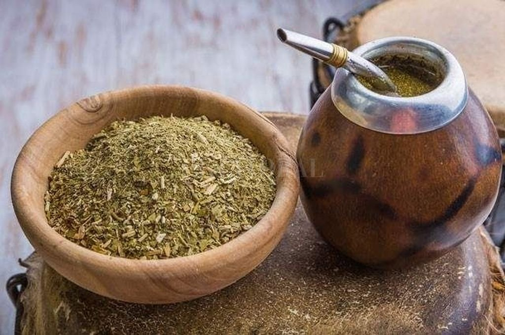

Juntos logramos reunir lo bueno
La planta de yerba mate tiene su origen en una cuidada selección de semillas, originarias de plantas de buena conformación, alta producción de hojas, bajo nivel de semillas por planta y buen comportamiento en el proceso de secado para obtener un producto con el sabor deseado. Las semillas están contenidas en el interior de los frutos, cuya recolección se realiza entre los meses de marzo y abril. Las semillas se depositan en almácigos que germinadas y logradas plantitas de dos a cuatro centímetros de altura se trasplantan en macetas. Para lograr un yerbal, los plantines con una altura de 20 cm, en macetas, se trasladan al campo a razón de 3.000 a 4.000 por hectárea, en el período invernal, para minimizar los efectos de cambio de ambiente que experimenta la planta al pasar del vivero con humedad y luz solar controlada al campo en el cual la humedad estará en función de las lluvias y el sol les impactará con toda su fuerza. El yerbal logra entre los 6 y 10 años el rendimiento óptimo, durante este tiempo se forman las plantas para su posterior cosecha. La cosecha de hoja verde de yerba mate se realiza en forma manual y/o mecanizada desde el mes de diciembre a setiembre de cada año, suspendiendo la misma en el período en el cual la planta se encuentra con un alto nivel de brotación. Las hojas recolectadas son transportados a los establecimientos de secado, denominados “secaderos” en donde el proceso se compone de tres etapas: la primera denominada sapecado que evita el proceso de fermentación de la hoja, sometiéndola a un violento golpe de calor del orden de los 600°C, la segunda denominada presecado, a una temperatura de 200°C y la tercera el secadero propiamente dicho, en donde el producto es sometido a una temperatura constante de 100° a 120°C. durante un período de 3 horas. Logrando así un producto con una humedad inferior al 5%, apto para su acondicionamiento en bolsas contenedoras de 20 a 25 kgs. cada una, y preparadas para el estacionamiento, este producto con una molienda gruesa se denomina yerba mate canchada. El estacionamiento de la yerba mate canchada se lleva a cabo en depósitos cubiertos y protegidos especialmente de la humedad ambiente, durante un período de entre 9 y 24 meses, para lograr que la yerba mate tenga las características de aroma, color y sabor óptimas para obtener luego del proceso de molienda final una yerba mate elaborada ideal para disfrutar de un delicioso mate, en la forma de infusión más tradicional, o la base para la preparación de yerba mate en saquitos para mate en tasa. En la molienda se cuida especialmente no generar un elevado nivel de polvo, propio del proceso de fricción de la yerba mate canchada, que se encuentra con un contenido de humedad no superior al 5%. Así mismo el envasado se realiza mediante envasadoras que conforman su propio envase a partir de láminas especialmente diseñadas para conservar el producto libre de aromas y humedad ambiente, de manera de hacer llegar al momento del consumo el producto en condiciones semejantes a las que se encontraba en su momento de envasado. Una vez abierto el envase, es muy importante el cuidado posterior, en razón de que la yerba mate absorbe muy fácilmente la humedad del ambiente, así como los demás aromas ajenos a su naturaleza.
